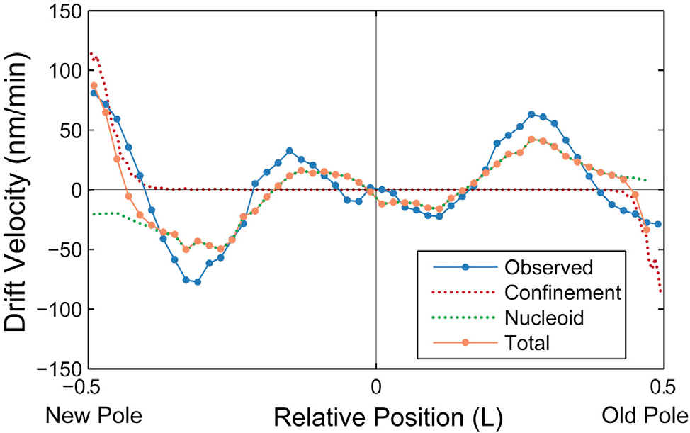

Nucleoids, Janus Particles,
and Active Matter
Wendell Smith
Topics
Flow through the Nucleoid
Janus Particle Propulsion
Active Particle Simulations
Flow through the Nucleoid
| Hard Inner Spherocylinder | Soft Potential |
|---|---|
Flow through the Nucleoid
| Wiggins | Soft Potential |
|---|---|
 | |
Passive Model
If we combine the predicted drift velocity maps for the nucleoid exclusion and membrane confinement models, we see striking agreement with the qualitative shape and quantitative scale of the observed drift velocity map throughout the entire cell.
They use an entirely passive model, like ours, to predict the same nucleoid flow
Position Dependent Diffusion Constant
Fig. 4B from Wiggins |
|
Position Dependent Diffusion Constant
| Fig. 4B from Wiggins | Soft Potential |
|---|---|
Diffusion constant calculated from \[ D \sim \frac{\left< \Delta x^2 \right>}{\Delta t} \] |
Step Size Distribution
| Wiggins | Soft Potential |
|---|---|
Janus Particle Propulsion

Half of each particle is coated with platinum, which catalyzes \(2 \mathrm{H_2 O_2 \rightarrow 2 H_2 O + O_2}\) on only one side
“The particles are being propelled by the local osmotic pressure gradient created by the asymmetric chemical reaction.” [2]
Note | Image is a modified diagram from a different paper [1]. |
Janus Particles

Janus Particles
Particles in H2O2 move much farther
Active Particle Simulations
Metabolic activity does not significantly raise the temperature of the cell (right?)
ATP, the main energy source of metabolism, has energy \(E_\mathrm{ATP} \sim 20 k_B T\)
Metabolic activity would not have a rotational orientation
Individual events happen infrequently, relative to the diffusion coefficients
Simulating Metabolism
Langevin thermostat \[ \vec F = -\vec \nabla U - \gamma \vec v + \vec \Gamma_T + \vec \Gamma_k\left(t\right) \]
WCA potential / repulsive Lennard-Jones for \(U\)
Damping \(\gamma\) to simulate solution viscosity
Random, instantaneous "kicks" to the particles
\(\vec \Gamma_T\) for the thermostat; balanced by \(\gamma\), the drag force
\(\vec \Gamma_k\) for metabolism
Random Kicks
| Thermostat | Metabolism |
|---|---|
|
|
Simulation
Without Activity | With Activity |
Experimental MSDs

A factor of \(\sim 2-10 \)
MSDs
with \(20 k_B T\) Kicks
MSDs
with \(200 k_B T\) Kicks
MSD Comparison
| |